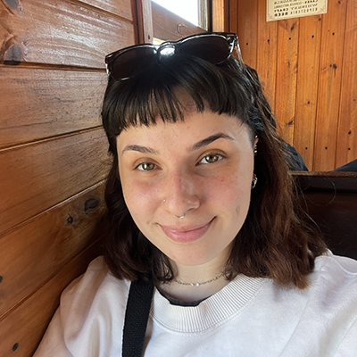

Licenciatura en Diseño y Comunicación Visual
Universidad Nacional de Lanús, 2022-2026

Mi nombre es Lara Agostina Zini, nací el 10/09/2003 y vivo en Avellaneda, en la zona sur del Gran Buenos Aires. Actualmente me encuentro en búsqueda de un puesto que me ayude a potenciar mi conocimiento en el area del diseño y de la comunicación visual. Me considero una persona muy resolutiva a la hora del trabajo individual pero, a la vez, suelo resaltar por mi gran creatividad y organización en trabajos en grupo.
Universidad Nacional de Lanús, 2022-2026
Instituto Pio XII de Avellaneda, 2016-2021